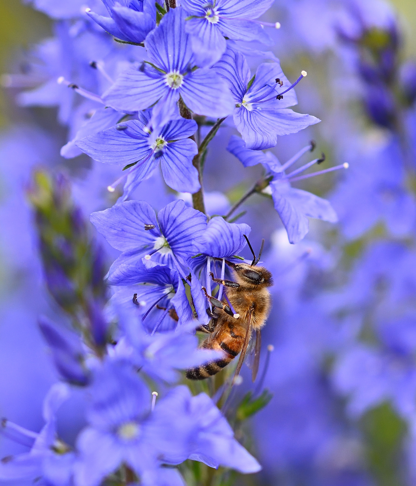
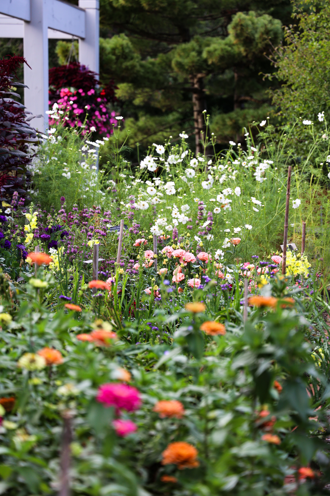

How Native Plants Support Pollinators
Not all flowers attract the same pollinators. Different plants provide different resources, which makes plant selection an important part of screating a pollinator garden. By including a variety of native wildflowers, gardeners can provide resources for different bee species.
Methods: This story uses published research from the U.S. Geological Survey (USGS) examining the attractiveness of native wildflower species to bees. Finds are sufmmarized from the original research.
Pollinators and the Gardens They Depend On


Which Wildflowers Attracted the Most Bees?
| Wildflower | Scientific Name | Bees Collected | Percentage of Total Bees |
|---|---|---|---|
| Blanket Flower | Gaillardia pulchella | 313 | 30.6% |
| Blue Vervain | Verbena hastata | 130 | 12.7% |
| Butterfly Milkweed | Asclepias tuberosa | 129 | 12.6% |
| Purple Coneflower | Echinacea purpurea | 103 | 10.1% |
| Greyheaded Coneflower | Ratibida pinnata | 63 | 6.2% |
| Black-eyed Susan | Rudbeckia hirta | 58 | 5.7% |
Source: USDA Natural Resources Conservation Service, Best Management Practices for Pollinators. Bee counts are from Table 4-6 of the report. Percentages were calculated by dividing each flower's bee countsby the reported total of 1,024 bees and multiplying by 100, rounded to one decimal place. Only six flower species are shown.
Which Native Wildflowers Attract the Most Bees?
Source: USDA Natural Resources Conservation Service, Best Management Practices for Pollinators, Table 4-6. This chart compares the number of bees collected from six wildflower species during a 2019 field study in Alabama. Bar lengths were calculated using a scale of two SVG units per bee. The chart includes only six selected species from the study.
Sources and Methods
This data story explains how native wildflowers can support pollinators. The table and fa-bar-chart show bee collection counts for six selected wildflower species from a 2019 field study in Alabama.
The chart uses the same bee counts as the table. Each bar is scaled at two SVG units per bee. Percentages in the table were calculated using a repoorted total of 1,024 bees and rounded to one decimal place.
The photographs used in this story are from Pexels. Research sources, image credits, licensing details, and testing documentation are recorded in the project's sources and documentation files.
Research source: Best Management Practices for Pollinator Habitat in the Southeast U.S. (USDA NRCS)
Photo Credits
Bee on blue flowers: Photo by Jurgen on Pexels.
Wildflower garden: Photo by Kate L. on Pexels.
Both photographs are used under the Pexels License .
Design System
This website uses CSS variables to keep the design consistent across the page. The color palette was customized to reflect a wildflower garden, using pink, lavender, yellow, green, and cream.
Shared styles control typography, spacing, borders, and responsive layouts. The data chart also uses these colors to connect the visualization to the overall design of the website.